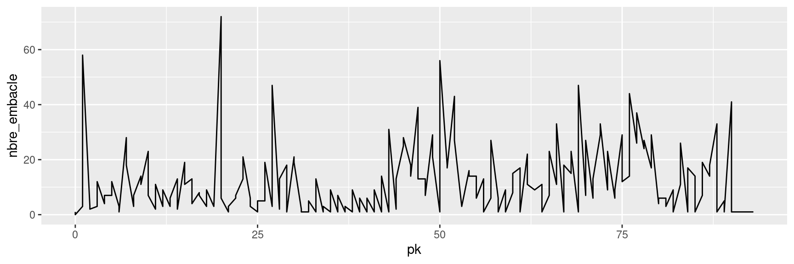
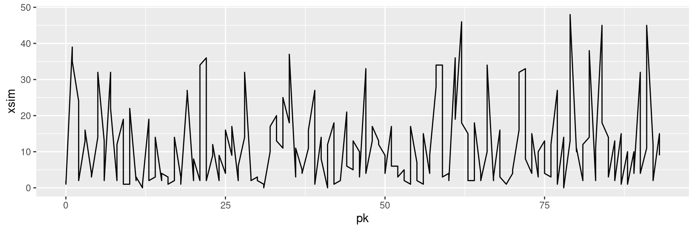
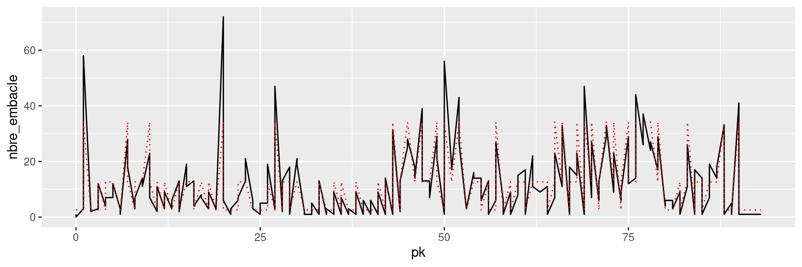

source("scripts/scripts_Zucchini_and_McDonald_2009.R")
# number of wood rafts
data= readr::read_csv("data/wood_abundance.csv")
pk=data$PK
x=data$nbre_embacle5 Continuous Hidden Markov Models
6 Introduction
plot(x, type="l")
lambda0=c(10,3,80)
gamma0=matrix(rep(0.025,9),nrow=3)
diag(gamma0)=0.95
parvect=pois.HMM.pn2pw(m=3,lambda=lambda0,gamma=gamma0)
fitted.HMM=pois.HMM.mle(x,m=3,lambda0,gamma0)Warning in nlm(pois.HMM.mllk, parvect0, x = x, m = m): NA / Inf remplacé par la
valeur maximale positiveprint(fitted.HMM)$lambda
[1] 34.177617 2.585169 12.725369
$gamma
[,1] [,2] [,3]
[1,] 0.2216705 0.4205523 0.3577771
[2,] 0.1159837 0.4795673 0.4044491
[3,] 0.1957610 0.3936675 0.4105716
$delta
[1] 0.1652990 0.4355228 0.3991782
$code
NULL
$mllk
[1] 691.3476
$AIC
[1] 1400.695
$BIC
[1] 1429.823xsim=pois.HMM.generate_sample(n=length(x),m=3,lambda=fitted.HMM$lambda,fitted.HMM$gamma)
plot(xsim, type="l")
fitted.HMM.EM=pois.HMM.EM(x,m=3,fitted.HMM$lambda,fitted.HMM$gamma, delta=NULL)states=pois.HMM.viterbi(x,m=3,lambda=fitted.HMM.EM$lambda,fitted.HMM.EM$gamma,delta=NULL)
print(states) [1] 2 2 2 1 2 2 2 3 2 3 3 3 2 2 1 3 2 3 3 3 1 3 2 3 2 3 2 2 3 2 3 3 3 2 3 3 2
[38] 3 2 2 1 2 2 2 2 3 3 3 2 2 2 2 2 3 2 1 2 3 3 2 3 3 2 2 2 2 2 3 2 2 2 3 2 3
[75] 2 2 2 3 2 2 2 2 2 3 2 3 2 1 2 3 1 1 3 3 1 3 3 3 1 3 2 1 3 3 1 1 2 2 3 3 3
[112] 2 3 2 2 1 2 2 3 2 3 3 3 2 3 3 3 3 3 2 3 1 3 1 2 3 3 1 2 1 3 1 2 3 1 1 3 1
[149] 2 3 1 3 3 1 1 1 1 1 3 1 2 2 2 2 3 2 3 1 2 3 3 2 3 3 3 3 1 2 2 2 1 2 2 2 2
[186] 2 2 2#|fig-cap:"Hidden states"
layout(matrix(1:2, nrow=2))
plot(pk,x,type="l", main="number of wood rafts ")
plot(pk,x, type="l")
points(pk,fitted.HMM.EM$lambda[states], col="red", type="l", lty=2)
7 The 2 states
m=2
lambda0=c(10,80)
gamma0=matrix(rep(0.025,m^2),nrow=m)
diag(gamma0)=0.95
parvect=pois.HMM.pn2pw(m=m,lambda=lambda0,gamma=gamma0)
fitted.HMM=pois.HMM.mle(x,m=m,lambda0,gamma0)Warning in nlm(pois.HMM.mllk, parvect0, x = x, m = m): NA / Inf remplacé par la
valeur maximale positiveprint(fitted.HMM)$lambda
[1] 4.186209 23.368149
$gamma
[,1] [,2]
[1,] 0.6841098 0.3158902
[2,] 0.4752263 0.5247737
$delta
[1] 0.6007033 0.3992967
$code
NULL
$mllk
[1] 807.4495
$AIC
[1] 1622.899
$BIC
[1] 1635.845fitted.HMM.EM=pois.HMM.EM(x,m=m,fitted.HMM$lambda,fitted.HMM$gamma, delta=NULL)states=pois.HMM.viterbi(x,m=m,lambda=fitted.HMM.EM$lambda,fitted.HMM.EM$gamma,delta=NULL)
print(states) [1] 1 1 1 2 1 1 1 2 1 1 1 2 1 1 2 2 1 1 2 2 2 1 1 1 1 1 1 1 2 1 2 2 2 1 1 1 1
[38] 1 1 1 2 1 1 1 1 1 2 2 1 1 1 1 1 2 1 2 1 2 2 1 2 2 1 1 1 1 1 2 1 1 1 1 1 1
[75] 1 1 1 1 1 1 1 1 1 1 1 2 1 2 1 2 2 2 2 2 2 2 2 1 2 2 1 2 2 2 2 2 1 1 2 2 2
[112] 1 2 1 1 2 1 1 1 1 1 2 2 1 2 1 1 1 1 1 1 2 2 2 1 2 2 2 1 2 1 2 1 2 2 2 1 2
[149] 1 1 2 2 2 2 2 2 2 2 2 2 1 1 1 1 1 1 1 2 1 2 2 1 1 2 2 2 2 1 1 1 2 1 1 1 1
[186] 1 1 1layout(matrix(1:2, nrow=2))
plot(pk,x,type="l", main="number of wood rafts ")
plot(pk,x, type="l")
points(pk,fitted.HMM.EM$lambda[states], col="red", type="l", lty=2)